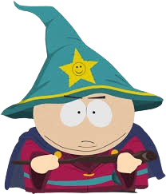
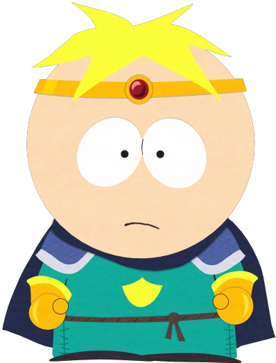
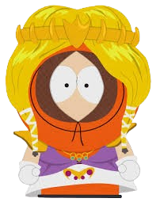
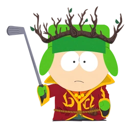

Seus Companheiros de Aventura
No mundo de The Stick of Truth, você encontrará diversos personagens icônicos de South Park, cada um com suas peculiaridades e habilidades únicas. Eles poderão se juntar a você em sua jornada ou atrapalhar seus planos. Escolha sabiamente seus companheiros!
Grande Rei Mago (Eric Cartman)
"Líder do Reino dos Humanos (Kupa Keep).Uma figura imponente (e obesa) que não mede esforços para atingir seus objetivos, mesmo que isso signifique manipular a todos ao seu redor. Sua liderança é... questionável."
- Classe: Mago
- Raça: Humano
- Facção: Reino de Kupa Keep (Líder)
- Habilidades: "Míssil Mágico", "Ataque de Chamas", "Nuvem Ardente", "Xingamento"
Paladino Butters, O Misericordioso (Butters Stotch)
"O leal paladino humano, sempre otimista e ingênuo. Butters é conhecido por sua bondade e determinação em ajudar os outros, mesmo quando as coisas ficam difíceis.
- Classe: Paladino
- Raça: Humano
- Facção: Reino de Kupa Keep
- Habilidades: "Toque Curativo", "Martelo da Justiça", "Martelo das Tempestades", "Professor Caos"
Princesa Kenny (Kenny McCormick)
"A encantadora Princesa Kenny, a bela dama de Kupa Keep que consegue encantar qualquer um, seja inimigo ou aliado, com sua beleza e é amada por toda a natureza."
- Classe: Princesa
- Raça: Humano
- Facção: Reino de Kupa Keep
- Habilidades: "Charme", "Beijo Real", "Amigos Peludos", "Investida do Unicórnio"
Rei Elfo Superior Judeu Kyle (Kyle Brofloviski)
"O líder dos Elfos, jurado inimigo de Cartman. Kyle é mais sensato, mas igualmente determinado a proteger o Cajado da Verdade de cair em mãos erradas."
- Classe: Judeu
- Raça: Elfo
- Facção: Elfos Negros (Líder)
- Habilidades: "Corrida", "Invocar Elemental", "Tempestade de Vento", "Chuva de Flechas".
O Bardo (Jimmy Valmer)

"O grandioso cantor, compositor e comediante Bardo, dono da estalagem do Burro Sorridente, apesar de sua condição física, não deve ser subestimado, é perigoso e poderoso."
- Classe: Bardo
- Raça: Elfo
- Facção: Elfos Negros
- Habilidades: "Acorde do Poder", "Canção de Moral", "Canção de Ninar", "Nota Marrom"
Patrulheiro Andarilho (Stan Marsh)

"O corajoso patrulheiro humano, sempre pronto para defender seus amigos e lutar contra o mal. Stan é conhecido por sua bravura e senso de justiça."
- Classe: Patrulheiro
- Raça: Meio-Elfo
- Facção: Elfos Negros
- Habilidades: "Marcado para Morte", "Disco do Poder", "Redemoinho Cortante", "Caminho da Espada"